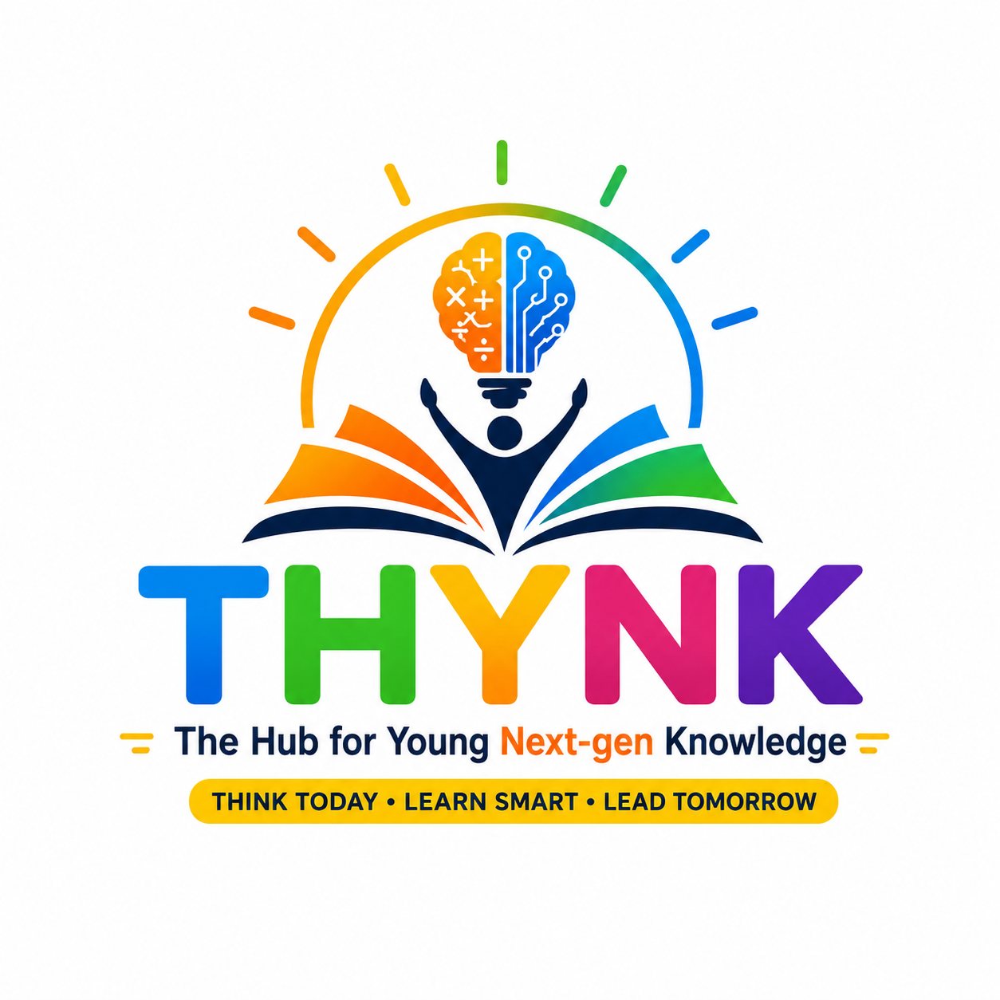

Think Today·Learn Smart·Lead Tomorrow
Where ancient Vedic wisdom meets modern code — a once-a-week program that turns your school's computer lab into a hub for future-ready minds.
The name says it all: The Hub for Young Next-gen Knowledge — pronounced THINK, because that is exactly what every session is designed to develop.
T.H.Y.N.K empowers young minds with future-ready skills through a unique blend of Vedic Mathematics, Coding, Logical Reasoning, Problem Solving and Creative Thinking. It creates an engaging environment where students build confidence, sharpen analytical abilities, and develop a lifelong love for learning.
T.H.Y.N.K is an ongoing school program in IT / Computers for Grades 4 to 7 — delivered once a week, entirely through your school's existing computer lab and teachers.
A Vedic sutra is a rule you follow step by step to reach an answer. An algorithm is a rule you follow step by step to reach an answer. T.H.Y.N.K makes that connection visible, explicit, and exciting.
Mental arithmetic shortcuts drawn from sixteen ancient sutras — 3–5× faster computation, sharper number sense, and structured logical thinking.
Visual coding in Scratch (Gr 4–5) and real web programming with HTML, CSS & JavaScript (Gr 6–7) — the foundations of every modern application.
By 2030, every job will have a digital component. A child who cannot read code in 2030 will be at the same disadvantage as a child who could not read English in 2000. Coding is the new literacy of thinking.
Break big problems into small steps, test, and fix — a skill that transfers to every subject.
Children flip from playing apps to making them — changing how they see technology forever.
Code rarely works the first time. Every project builds patience and a calm-under-failure mindset.
AI replaces those who can't work with it. Students who code can direct AI, not be directed by it.
Structured, measurable, audit-ready delivery of computational thinking from middle school onward.
Research shows measurable gains in maths, reading and reasoning within 6–12 months of coding.
Every child who finishes T.H.Y.N.K should be able to:
A problem step-by-step in their head using a Vedic sutra.
That same solution as working code on a screen.
Both to another person — in their own words.
For the right purpose — to create, not just consume.
All schools introduce Vedic Maths in middle school. T.H.Y.N.K deepens that foundation into something practical and modern.
NEP 2020 requires coding from Grade 6. T.H.Y.N.K gives schools a structured, ready-to-deliver way to fulfil this — without hiring specialist coding teachers.
Children who learn Vedic techniques compute much faster mentally. That speed directly transfers to coding: faster debugging, quicker logic tracing, more confidence with numbers in programs.
The Vedic sutras predate much of Western mathematics. Teaching them alongside modern code gives students a sense of ownership over both subjects.
Visual block-based coding from MIT — used by 100M+ children worldwide. Removes the typing barrier and lets students focus on logic and creativity.
What students actually learn in Scratch:
Order, clicks, key presses — foundation of every program.
repeat / forever — mapped to Ekadhikena Purvena.
Storing numbers, scores, answers; building a quiz that tracks score.
If / else — checking answers, giving feedback.
Building actual Vedic algorithms in Scratch's arithmetic blocks.
Packaging a sutra as a reusable function — first taste of abstraction.
Making maths visual — numbers dance, sutras animate.
Recording their own voice explaining a sutra — turns code into teaching.
Multi-sprite communication — early event-driven programming.
Real web programming — the exact three languages used to build every website on the internet, from Google to Instagram. No toys, no training wheels.
What students actually learn:
Tags, elements, attributes, headings, lists, images, forms & inputs, semantic layout (<header>, <section>, <footer>).
Selectors, the Box Model, colours, fonts, Flexbox & Grid, responsive design for phones & tablets, animations and transitions.
Variables, conditionals, loops, functions, arrays & objects, DOM manipulation, event handling, debugging with the browser console.
A predictable four-part rhythm teachers internalize by Week 3 — easy to deliver, easy to assess, easy to love.
5 mental maths problems using today's sutra. No calculators.
Teacher draws the connection between sutra and coding concept.
Students code on guided starter files. Fast finishers get extensions.
Two students show work. One-line written reflection by every child.
| Vedic Sutra | Meaning | Coding Concept |
|---|---|---|
| Ekadhikena Purvena | By one more than the previous | Loops — repeat blocks, for / while |
| Nikhilam | All from 9, last from 10 | Variables — storing intermediate values |
| Urdhva Tiryakbhyam | Vertically and crosswise | Nested loops — processing every position |
| Gunita Samuchaya | Product of sum = sum of product | Debugging — verification via digital roots |
| Anurupyena | Proportionality | Functions & CSS — write once, scale infinitely |
We are inviting schools to pilot T.H.Y.N.K in the upcoming academic year. The pilot cohort receives the full teacher kit, training, and ongoing support at no cost to the school. We are looking for schools that:
One registration, one annual fee — that's it. No upsells, no hidden charges, no "premium tier." Built so every family in your school can say yes.
The 2026–27 pilot cohort receives the complete teacher kit, on-site training, and full-year support free of charge. All we ask in return is a 35-minute weekly slot and honest feedback from your teacher.
▸ Book a 30-minute demo with your academic coordinator and computer teacher — we walk through one complete sample session, end-to-end, live.
☎ +91 98197 41486
✉ zaradhana24@gmail.com
☎ +91 99200 49590
✉ pranavs80@gmail.com